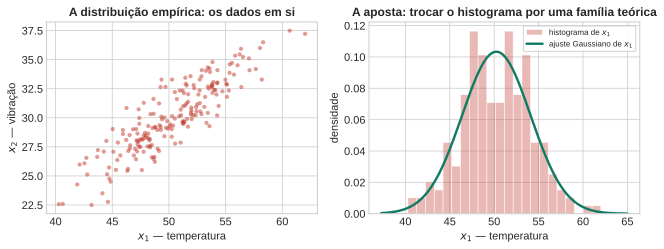
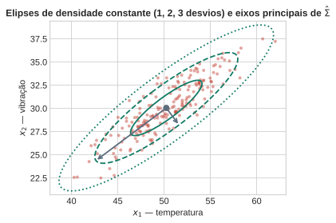
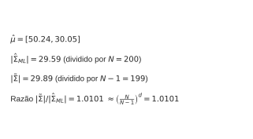
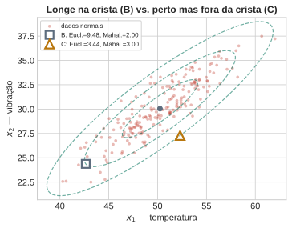
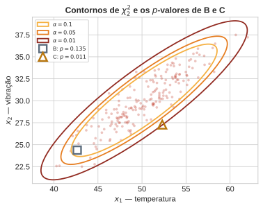
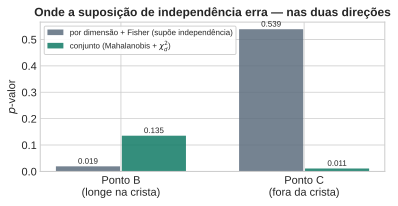

flowchart LR
A["dados sem rótulo"] --> B["assumir família teórica<br/>(Gaussiana multivariada)"]
B --> C["ajustar por máxima<br/>verossimilhança"]
C --> D["distância de Mahalanobis<br/>de um ponto novo"]
D --> E["p-valor via χ²_d"]
E --> F["decisão: típico ou anômalo"]
Aula 1: Modelos Generativos Paramétricos e Detecção de Anomalias
Aprendizado Não Supervisionado
1 Abertura — modelar dados sem rótulos
Todo o curso de Aprendizado Supervisionado parte de um par \((\mathbf{x}, y)\): um vetor de características e um rótulo a prever. Aqui não há \(y\) — só \(\mathbf{x}_1,\dots,\mathbf{x}_N \in \mathbb{R}^d\). A pergunta deixa de ser “que função prevê \(y\) a partir de \(\mathbf{x}\)” e passa a ser mais básica: que forma esses dados têm?
Essa pergunta parece vaga, mas tem uma primeira resposta operacional direta, e é o assunto desta aula: profiling. Descrever o comportamento típico de uma população — a forma que a maioria dos pontos assume — para depois reconhecer o que se desvia dela. Um sensor de temperatura e um de vibração de uma máquina, por exemplo, variam juntos sob operação normal. Quando um ponto novo chega, a pergunta é: ele se parece com o que já vimos?
O caminho desta aula, em uma frase: assumir uma família teórica conhecida para os dados, ajustá-la, e usar a verossimilhança do modelo ajustado para decidir o que é típico e o que não é.
2 Distribuição Empírica vs. Teórica
O objeto mais honesto que se pode construir a partir dos dados é a distribuição empírica: o próprio histograma, ou a nuvem de pontos. Ela nunca está “errada” — é literalmente o que foi observado. Mas tem dois problemas práticos: é ruidosa (poucos dados numa região dão uma estimativa tremendamente instável), e não diz nada sobre pontos que nunca foram observados.
A aposta desta aula é trocar ruído por estrutura: assumir que os dados vieram de uma família teórica conhecida, com poucos parâmetros. O preço é que a suposição pode estar errada — um tema que volta na aula inteira, e no fechamento (Bloco 7).

3 A Gaussiana Multivariada: Forma e Parâmetros
A distribuição Gaussiana (ou normal) multivariada, para um vetor \(\mathbf{x}\in\mathbb{R}^d\), é (PRML, eq. 2.43, p. 78):
\[ \mathcal{N}(\mathbf{x}\mid\boldsymbol\mu,\Sigma) = \frac{1}{(2\pi)^{d/2}}\frac{1}{|\Sigma|^{1/2}} \exp\left\{-\frac12(\mathbf{x}-\boldsymbol\mu)^T\Sigma^{-1}(\mathbf{x}-\boldsymbol\mu)\right\}. \]
Dois parâmetros bastam: \(\boldsymbol\mu\in\mathbb{R}^d\) (o centro) e \(\Sigma\in\mathbb{R}^{d\times d}\) (a forma). \(\Sigma\) é simétrica e positiva definida; seus autovetores dão a orientação dos eixos de densidade constante, e seus autovalores dão o comprimento desses eixos — as curvas de nível da Gaussiana são elipsoides centrados em \(\boldsymbol\mu\) (PRML, pp. 80–81, Figura 2.7).
NotaPor que a Gaussiana é a escolha natural (citado, não provado aqui)
Duas razões clássicas, ambas em PRML §2.3, p. 78: (1) é a distribuição de entropia máxima dada média e covariância fixas — a suposição menos comprometida possível além desses dois momentos; (2) pelo Teorema Central do Limite, a soma de muitas variáveis aleatórias tende a uma Gaussiana, o que a torna plausível como modelo de ruído agregado ou de medições que resultam de muitos efeitos pequenos somados. Nenhuma das duas provas é feita aqui — ambas voltam com mais detalhe em cursos futuros.

4 Ajuste por Máxima Verossimilhança
Dado um conjunto \(\mathbf{x}_1,\dots,\mathbf{x}_N\) assumido i.i.d. de \(\mathcal{N}(\boldsymbol\mu,\Sigma)\), a máxima verossimilhança dá (PRML §2.3.4, eqs. 2.118–2.122, pp. 93–94):
\[ \hat{\boldsymbol\mu} = \frac1N\sum_{n=1}^N \mathbf{x}_n, \qquad \hat\Sigma_{\text{ML}} = \frac1N\sum_{n=1}^N(\mathbf{x}_n-\hat{\boldsymbol\mu})(\mathbf{x}_n-\hat{\boldsymbol\mu})^T. \]
ImportanteArmadilha prática: \(\hat\Sigma_{\text{ML}}\) é viesada, e precisa de \(N>d\)
Duas coisas para anunciar antes que a turma descubra sozinha. Primeira: \(\mathbb{E}[\hat\Sigma_{\text{ML}}] = \frac{N-1}{N}\Sigma\) — subestima a covariância verdadeira (PRML, eqs. 2.123–2.124, p. 94). A correção padrão divide por \(N-1\) em vez de \(N\): \(\tilde\Sigma = \frac{1}{N-1}\sum_n(\mathbf{x}_n-\hat{\boldsymbol\mu})(\mathbf{x}_n-\hat{\boldsymbol\mu})^T\) (PRML, eq. 2.125, p. 94) — é exatamente o np.cov padrão do NumPy. Segunda, mais grave: se \(N \le d\), \(\hat\Sigma\) não é invertível (posto no máximo \(N-1\), precisa de posto \(d\)). Sem \(\Sigma^{-1}\), não há distância de Mahalanobis, não há verossimilhança bem definida — o resto da aula trava. Guarde isso: é exatamente a maldição da dimensionalidade que abre a Aula 2.

5 Da Verossimilhança à Distância de Mahalanobis
Comparar \(p(\mathbf{x})\) com um limiar é equivalente a comparar o termo que está no expoente — a única parte que depende de \(\mathbf{x}\). Essa quantidade é a distância de Mahalanobis (PRML, eq. 2.44, p. 80):
\[ D_M(\mathbf{x})^2 = (\mathbf{x}-\hat{\boldsymbol\mu})^T\hat\Sigma^{-1}(\mathbf{x}-\hat{\boldsymbol\mu}), \]
que “reduz à distância Euclidiana quando \(\Sigma\) é a identidade” (PRML, p. 80) — mas em geral não é a Euclidiana, e a diferença é o ponto todo desta aula. \(\Sigma^{-1}\) estica o espaço nas direções de baixa variância e comprime nas de alta variância: um deslocamento ao longo do eixo de alta correlação “custa pouco” em Mahalanobis, mesmo que pareça grande em unidades brutas; um deslocamento perpendicular a esse eixo “custa muito”, mesmo que pareça pequeno.
Dois pontos novos tornam isso concreto — nenhum dos dois é o típico “outlier evidente”:

O ponto B está longe do centro em unidades brutas (ao longo da crista de alta correlação), mas sua distância de Mahalanobis é modesta — é exatamente o tipo de desvio que a correlação prevê. O ponto C está próximo do centro em unidades brutas, mas fora da crista — sua distância de Mahalanobis é maior, porque ele quebra a relação entre as duas variáveis, não porque esteja “longe” no sentido ingênuo. Guarde os dois: o próximo bloco transforma essas distâncias em probabilidades, e o contraste entre B e C é exatamente onde a suposição de independência entre dimensões vai errar em direções opostas.
6 Da Posição ao \(p\)-valor
6.1 Do limiar fixo ao escore contínuo
Se \(\mathbf{x}\sim\mathcal{N}(\boldsymbol\mu,\Sigma)\), então \(D_M(\mathbf{x})^2 \sim \chi^2_d\) — soma de \(d\) quadrados de normais padrão independentes, que é a própria definição da qui-quadrado. (Este resultado é estatística multivariada clássica; não está em PRML ou DLFC — verificação: \(\mathbf{Y}=\Sigma^{-1/2}(\mathbf{X}-\boldsymbol\mu)\sim\mathcal{N}(0,I_d)\), logo \(\mathbf{Y}^T\mathbf{Y}=\sum_i Y_i^2 = D_M(\mathbf{X})^2 \sim \chi^2_d\) por definição.)
Em vez de só “dentro/fora” de um limiar fixo, isso permite definir o escore de anomalia como um \(p\)-valor:
\[ p(\mathbf{x}) = P\big(D_M(\mathbf{X}')^2 \ge D_M(\mathbf{x})^2 \mid \mathbf{X}'\sim\mathcal{N}(\hat{\boldsymbol\mu},\hat\Sigma)\big) = 1 - F_{\chi^2_d}\big(D_M(\mathbf{x})^2\big), \]
literalmente: qual a probabilidade de um ponto do modelo ajustado ser tão extremo, ou mais, quanto \(\mathbf{x}\). O limiar fixo é o caso particular \(p(\mathbf{x}) < \alpha\); o \(p\)-valor ordena todos os pontos por quão surpreendentes eles são, em vez de só separá-los em duas caixas.
AvisoArmadilha de interpretação
\(p(\mathbf{x})\) pequeno não significa “probabilidade de \(\mathbf{x}\) pertencer à distribuição verdadeira”. Significa “probabilidade de um ponto do modelo ajustado ser tão extremo quanto \(\mathbf{x}\)”. É uma afirmação sobre o modelo, condicional a ele estar certo — não é uma afirmação sobre a origem de \(\mathbf{x}\). Se o modelo estiver errado (Bloco 7), o \(p\)-valor também estará.

6.2 Conjunta vs. por dimensão — o mesmo trade-off do Naive Bayes, agora em teste de hipótese
Calcular \(D_M\) exige estimar e inverter \(\hat\Sigma\) — \(d(d+1)/2\) parâmetros, caro e instável quando \(N\) não é \(\gg d\) (a armadilha do Bloco 4). A alternativa mais barata: supor independência entre dimensões (PRML discute exatamente essa restrição — \(\Sigma\) diagonal — em §2.3, p. 84, como uma forma de “tornar a inversão da matriz de covariância uma operação muito mais rápida”, ao custo de “limitar a capacidade do modelo de capturar correlações interessantes nos dados”). Sob essa suposição, calcula-se um \(p\)-valor por dimensão, \(p_i(x_i) = P(|Z_i|\ge|z_i|)\) usando só a marginal \(\mathcal{N}(\hat\mu_i,\hat\sigma_i^2)\) — \(d\) parâmetros, não \(d(d+1)/2\) — e combinam-se os \(d\) \(p\)-valores independentes pelo teste de Fisher, \(-2\sum_i\ln p_i(x_i) \sim \chi^2_{2d}\) (também estatística clássica, não coberta por PRML/DLFC — combinação padrão de \(p\)-valores independentes).
flowchart TD
X["ponto novo x"] --> Q{"supor independência<br/>entre dimensões?"}
Q -->|"sim"| M1["p-valor por dimensão<br/>(d parâmetros)"]
M1 --> F1["combinar via Fisher<br/>-2 Σ ln p_i ~ χ²_2d"]
Q -->|"não"| M2["distância de Mahalanobis<br/>(d(d+1)/2 parâmetros)"]
M2 --> F2["p-valor conjunto<br/>via χ²_d"]
F1 --> R["cego à correlação entre dimensões"]
F2 --> R2["sensível à correlação — mais caro"]

O gráfico mostra o erro nas duas direções. No ponto B, cada coordenada isolada já parece grande (o teste por dimensão dá um \(p\)-valor baixo), mas a combinação é exatamente o que a correlação prevê — o teste conjunto reconhece isso e dá um \(p\)-valor bem maior: falso alarme do teste por dimensão. No ponto C, cada coordenada isolada parece perfeitamente normal (o teste por dimensão dá um \(p\)-valor alto, tranquilizador), mas a combinação quebra a correlação — o teste conjunto enxerga isso e dá um \(p\)-valor baixo: anomalia real que o teste por dimensão deixa passar. Nenhum dos dois testes está “certo” em geral; a suposição de independência é uma escolha, com um preço que depende de onde a anomalia acontece — a mesma lição do preço da suposição de independência do Naive Bayes, agora em teste de hipótese em vez de classificação.
7 Armadilhas e Ponte para a Aula 2
Dois jeitos de essa receita quebrar, nenhum deles resolvido nesta aula:
- Dados genuinamente multimodais. Se a população real tem duas subpopulações distintas (por exemplo, dois regimes de operação da máquina), uma única Gaussiana ajustada é uma média cega entre os dois modos — o ajuste “funciona” no sentido de que a matemática produz \(\hat{\boldsymbol\mu}\) e \(\hat\Sigma\) válidos, e mesmo assim a descrição resultante mente sobre a forma real dos dados.
- Outliers no próprio conjunto de ajuste. \(\hat{\boldsymbol\mu}\) e \(\hat\Sigma\) são médias — poucos pontos extremos os deslocam e inflam \(\hat\Sigma\), o que aumenta o limiar e esconde exatamente o que se queria detectar. Isso não é resolvido aqui; é um problema de robustez (estimadores robustos de locação/escala) fora do escopo desta aula.
Ponte para a Aula 2
Toda a aula assumiu que uma única forma paramétrica — a Gaussiana — descreve os dados. A Aula 2 relaxa essa suposição pelo lado não-paramétrico: em vez de assumir uma família, estimar a densidade diretamente dos vizinhos mais próximos (\(k\)-NN) e suavizar com Estimação de Densidade por Kernel (KDE). O preço dessa liberdade — a maldição da dimensionalidade, já anunciada no Bloco 4 — é o assunto de lá.